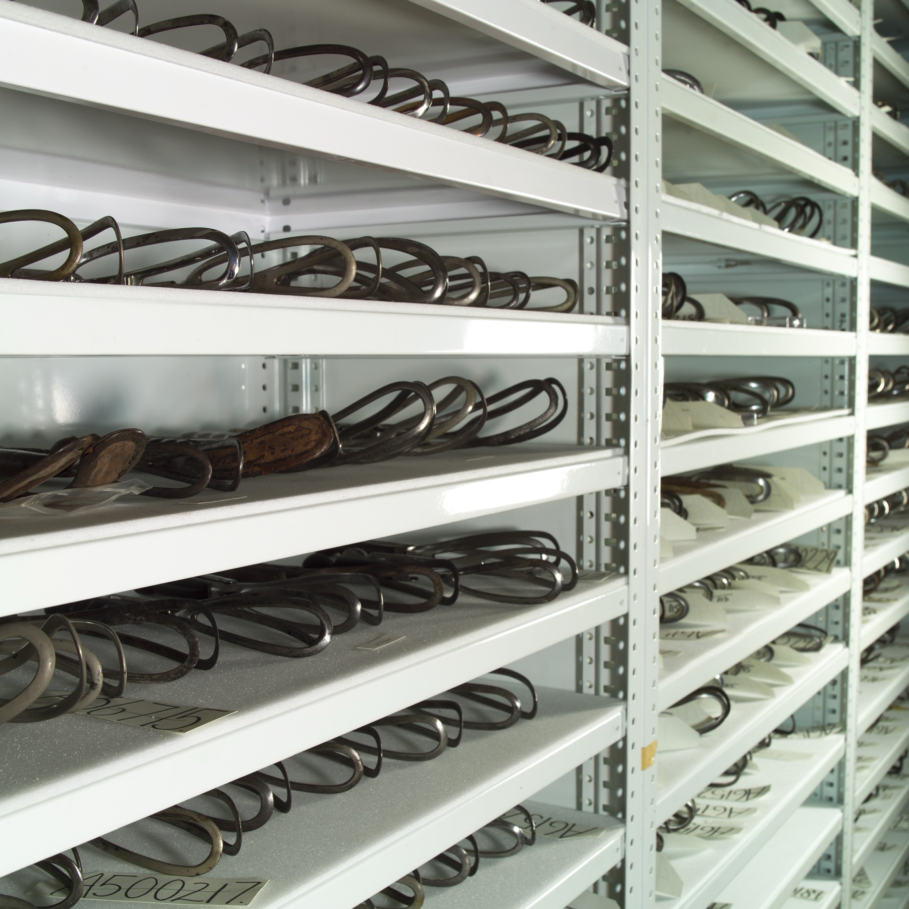

Página 1 · Parto vaginal operatório
Aplicar ou não o fórceps? As duas perguntas que organizam tudo
Uma parturiente chega ao fim do trabalho de parto. Dilatação total, bolsa já rota, a cabeça bem descida, o feto fletido, olhando para o púbis. E ela, exausta — empurra, empurra, e não consegue mais. O bebê precisa nascer logo. A pergunta que salta primeiro é a mais tentadora e a mais errada: "então é cesárea?". Guarde essa mulher. Ela reaparece no fim, e a conduta dela vai parecer óbvia depois que estas três perguntas estiverem montadas na sua cabeça.
As duas perguntas que organizam toda decisão
Toda decisão com fórceps se encadeia em duas perguntas, nesta ordem. Primeiro: qual tipo de instrumento aquela situação pede? Segundo: eu tenho condições de aplicá-lo — eu posso usar? Sei qual usar é uma coisa; poder usar é outra, e é a que separa o obstetra do acidente. Essas duas perguntas são o cabide de tudo o que vem adiante: a primeira abre o catálogo dos instrumentos; a segunda abre o checklist de aplicabilidade. E há uma terceira, que fecha o raciocínio: o que pode dar errado? — o preço de cada escolha.
As três indicações — e por que não é só sofrimento fetal
O sofrimento fetal agudo está longe de ser a única razão para pegar um fórceps. São três as situações que o indicam:
- Abreviar o período expulsivo. Aqui mora a armadilha mais cobrada: abreviar o expulsivo não exige sofrimento fetal. A indicação pode ser materna — a parturiente exausta, sem progressão, ou a paciente que não pode fazer força (cardiopatia grave, pneumopatia, história de AVC/aneurisma, entre outras). Nesses casos o instrumento entra como fórceps de alívio / profilático: encurta o esforço e o desconforto do período pélvico. Fórceps não é sinônimo obrigatório de sofrimento fetal. Esta é a fisgada — quem marca "só se indica com sofrimento fetal" cai.
- Corrigir uma variedade de posição que não roda sozinha na descida.
- Extrair a cabeça derradeira retida num parto pélvico — a cabeça que ficou presa depois que o corpo do bebê já saiu.
Interativo: toque no polo fetal de cada cena.
Três cenas na pelve materna. A primeira carrega o rótulo duplo — materno (exausta) × fetal (sofrimento): é a indicação de alívio, que não exige feto em risco. A segunda, a variedade a corrigir. A terceira, a cabeça derradeira retida no pélvico. A cena que ancora a página é a primeira: a indicação pode ser só da mãe.Mais de 20 modelos existem, só três caem na prova
Existem mais de 20 modelos de fórceps descritos — dezenas, historicamente centenas. Isso é trivia; não perca sono com ela. O que resolve a maior parte das questões é guardar três: Simpson, Kielland e Piper. Cumpridos os critérios, o fórceps abrevia o expulsivo em minutos — e, com frequência, a via mais rápida não é a cesárea. Essa é a herança que a decisão traz: a cesárea é um degrau; existe um degrau mais curto quando dá para subi-lo com segurança.

Dezenas de fórceps lado a lado numa coleção histórica: as colheres aparecem como alças metálicas ovais fenestradas, desenhadas para abraçar a cabeça fetal; as hastes e os cabos variam curvatura cefálica, curvatura pélvica, comprimento e tipo de articulação. É a cara do ">20 modelos" — e o lembrete de que "fórceps" não é um instrumento único. Só três resolvem a prova.
"Obstetrics forceps in the Wellcome Collection", Wellcome Images, via Wikimedia Commons — CC BY 4.0 · página de origem
Quiz — fixação
Parturiente em período expulsivo, dilatação total, feto com batimentos tranquilizadores, mas mãe exausta e sem progredir. Sobre a indicação de fórceps:
- B) Correta. Abreviar o expulsivo não exige sofrimento fetal — a exaustão materna (ou uma condição que impeça a força expulsiva) é indicação legítima, o fórceps de alívio.
- A) É a pegadinha central invertida. Associa fórceps a sofrimento fetal obrigatório — cai quem decorou "fórceps = feto em risco".
- C) Pula o degrau. Existe recurso mais curto e menos invasivo que a cesárea quando os critérios estão cumpridos; oferecer cesárea de saída é escalar sem necessidade.
- D) Confunde indicação com escolha de modelo. A variedade de posição decide qual fórceps, não se há indicação; e transversa, aliás, contraindicaria o Simpson, não a conduta.
As duas perguntas que estruturam toda conduta com fórceps são, na ordem correta:
- B) Correta. Primeiro se escolhe o tipo que a situação pede; depois se checa se há condições de aplicabilidade — saber usar e poder usar são coisas distintas.
- A) Inverte. Checar aplicabilidade antes de saber que instrumento se pretende usar é responder à pergunta errada primeiro — a variedade de posição só faz sentido depois de decidir instrumentar.
- C) Troca o raciocínio de instrumentação por um fluxo de emergência. Ignora as indicações maternas e a possibilidade de via vaginal operatória.
- D) É a trivia dos ">20 modelos". Irrelevante para a decisão; o número de modelos não muda a conduta.
Decidido que se vai instrumentar, abre-se a bandeja: três fórceps parecidos, e o que faz cada um ser certo para uma situação e errado para outra.